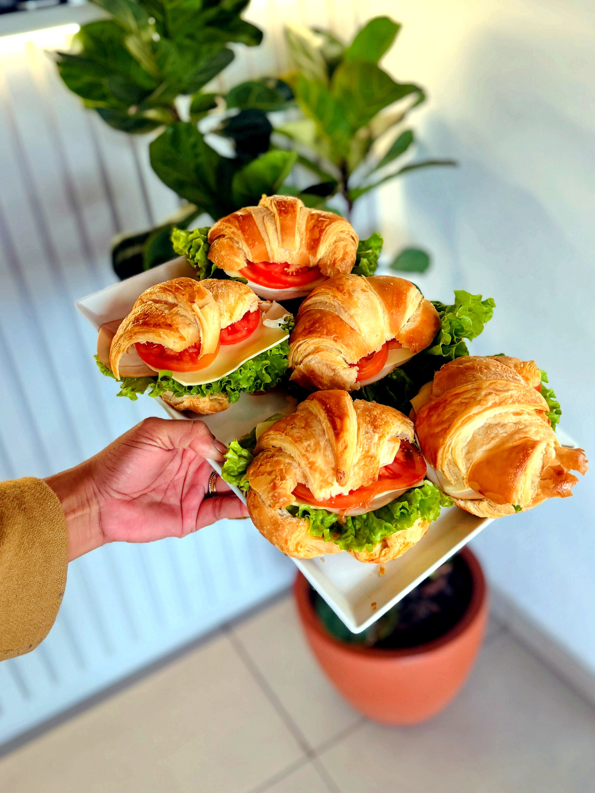
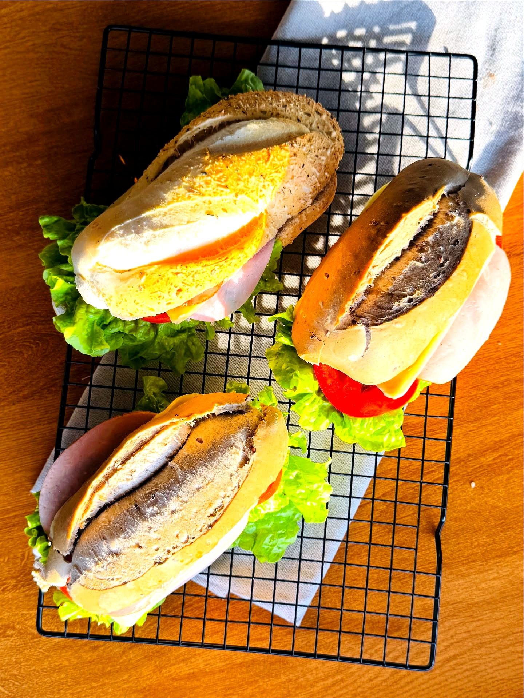
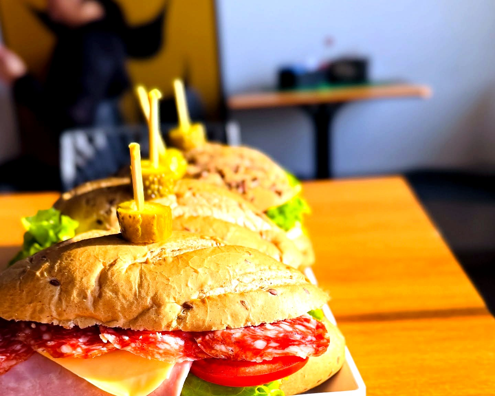
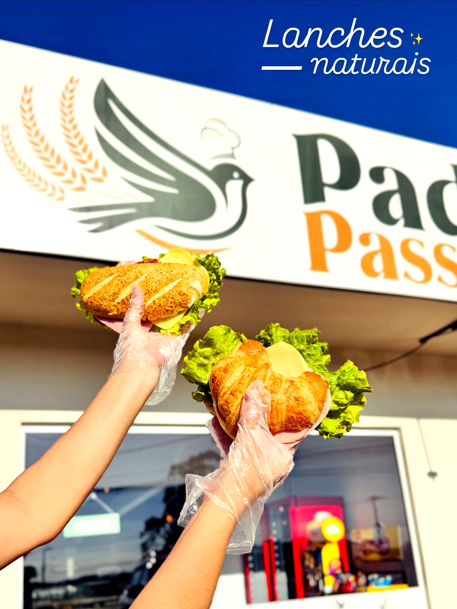

Padaria
Passarinho
Padaria
Passarinho

Padaria & confeitaria artesanal
Tudo feito à mão, do jeitinho de casa.
Bolos por encomenda, sobremesas, caseirinhos e lanches naturais. Peça pelo WhatsApp e retire fresquinho aqui na Passarinho.
Um cantinho pra sentar, tomar um café e comer aquele pão quentinho.
Bolos por encomenda
Tortas altas, recheio generoso e cobertura feita na hora. Todas 79,90/kg, montadas sob encomenda com pelo menos 48h de antecedência.
Morango, nata e 4 leites79,90/kg
Creme 4 leites, abacaxi e coco ralado79,90/kg
Brigadeiro branco e meio amargo79,90/kg
Chocolate preto com morango79,90/kg
Baba de moça, crocante de nozes, geleia de damasco e nata79,90/kg
Chocolate, chantilly e cerejas79,90/kg

Sobremesas & doces
As tortas geladas e os doces da vitrine mudam ao longo da semana. Estas são as queridinhas da casa.
Banoffee
Base crocante, doce de leite, banana e muito chantilly polvilhado com canela.

Bolo de bolacha
Camadas de biscoito e creme, calda de chocolate por cima. Aquele de sempre, do jeito que a vó fazia.

Cheesecake de Oreo
Base de chocolate crocante, recheio cremoso com pedaços de Oreo e ganache por cima.

Carolinas
Massa leve recheada na hora, cobertura de chocolate ou chantilly com fruta fresca.

Folhadinhos
Massa folhada crocante, creme confeiteiro e fruta fresca por cima. Vendidos por unidade.
E ainda tem
Bombom de morango, bombom de uva verde, pudim e mousse de maracujá ou limão. Peça a fatia ou a taça inteira.
Ver o que tem hoje →Caseirinhos & donuts
Sonho de morango recheado, donuts do dia e os caseirinhos polvilhados que a gente tira do forno a toda hora. Chegou, provou.
Reservar uma fornadaDireto do forno: nosso processo do dia a dia.


Lanches naturais
Pão integral, croissant ou baguete de grãos, recheio montado na hora e salada fresquinha. Pra levar ou comer ali mesmo, no balcão.
Pedir um lanche






Mini cakes
Bolinho individual, embalado com laço, perfeito pra celebrar um momento especial com quem você ama. Escolha o sabor e a cor da fita.
Encomendar um mini cakeComo encomendar
Chama no WhatsApp
Manda o sabor, o tamanho (em kg) e a data que você precisa. A gente confirma tudo por lá.
Peça com antecedência
Bolos e tortas com no mínimo 48h. Bolos decorados e para festa, 3 dias antes.
Sinal de 50%
O pedido é reservado com 50% de sinal. O restante você acerta na hora de retirar.
Retire fresquinho
Combinamos dia e horário de retirada na loja. Sai do balcão pra sua mesa.
Onde estamos
R. José Olímpio da Silva, 108
Tapera da Base, Florianópolis - SC
Segunda a sábado, 5h30 às 20h
Domingo, 5h30 às 12h
WhatsApp (48) 3500-0458
@padaria_passarinho

Começou com duas mãos e um forno.
A Passarinho nasceu da vontade de levar pro bairro o gosto de comida feita em casa. Duas fundadoras, muitas receitas de família e a teimosia de fazer tudo à mão, todo dia.
Hoje a vitrine tem bolo, torta, caseirinho e lanche, mas o jeito continua o mesmo: ingrediente de verdade, ponto certo e aquele cheiro que toma conta da rua quando o forno abre.